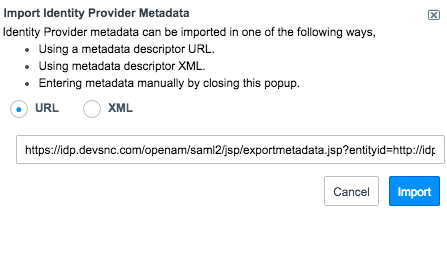

Multiple Provider Single Sign-On
| |
Note: This article applies to Fuji and earlier releases. For more current information, see Multiple-Provider Single Sign-On (SSO) at http://docs.servicenow.com
The ServiceNow Wiki is no longer being updated. Visit http://docs.servicenow.com for the latest product documentation. |
Contents
- 1 Overview
- 2 Changes to SAML 2.0 and Digest Token Configuration
- 3 Changes to Local Database Authentication
- 4 Setting Up Multi-Provider SSO
- 5 Logging In
- 6 Allowing Users to Choose the Identity Provider for Login
- 7 Using E-Signature with Multi-Provider SSO
- 8 Using ESS Pages with Multi-Provider SSO
- 9 Menus and Modules
- 10 Installed with Multi-Provider SSO
- 11 Activating Multiple Provider Single Sign-On
- 12 Enhancements
1 Overview
The multiple provider single sign-on feature allows organizations to use several SSO identity providers (IdPs) to manage authentication as well as retain local database (basic) authentication. The integration supports any combination of local and external authentication methods on a single instance:
- SAML 2.0
- Digest Authentication
- LDAP
- Local database authentication
For example, a globally dispersed corporation might require one SSO provider for their employees, a different one for their vendors, and local database authentication for their administrators. Alternatively, a company might implement SAML 2.0 and a digest token authentication solutions on the same instance.
This feature is available starting with the Eureka release.
2 Changes to SAML 2.0 and Digest Token Configuration
Multiple provider single sign-on allows administrators to configure SAML 2.0 Update 1 and digest token as authentication methods. Multiple provider single sign-on should be activated before you configure your SAML 2.0 Update 1 and digest token properties. After you activate multi-provider SSO, you must then set it up. After setting up multi-provider SSO, you can create or update the SAML 2.0 Update 1 and digest token configurations. You can use either or both authentication solutions with multi-provider SSO. For more information on the steps required to integrate multi-provider SSO with SAML 2.0 and digest token, see Setting Up Multi-Provider SSO.
| |
Note: The Integration - Multiple Provider Single Sign-On Installer plugin removes the SAML application from the navigator. The necessary SAML settings are migrated to the Multi-Provider SSO application into the SAML2 Migrated table. You can still modify items like the x509 certificate, IdP details, and so on through the Multi-Provider SSO application. |
3 Changes to Local Database Authentication
If you still want to use local database authentication when Multi-SSO is active, you must set the glide.authentication.external.disable_local_login property to false. See Redirection Properties.
4 Setting Up Multi-Provider SSO
Perform these procedures to set up multi-provider SSO.
- Configure multi-provider SSO properties.
- Create or update identity providers.
- Configure users for multi-provider SSO.
| |
Warning: If you clone your instance, preserve the multiple provider SSO properties on the target instance for all of the properties tables that are installed with multi-provider SSO. This is recommended for all targeted instances that have multi-provider SSO enabled. |
4.1 Configuring Multi-Provider SSO Properties
- Navigate to Multi-Provider SSO > Properties.
- Select the Enable Multi-Provider SSO check box. This adds the link Use external login to the login page.
- To enable the debug messages to appear at the bottom of the content frame, select the Enable debug logging for the Multi-Provider SSO integration check box.
- If enabled, the debug logging feature will slow down performance and use up disk space in order to generate the logs.
- In the property The field on the user table that identifies a user accessing the "User identification" login page, enter the field on the User table that contains the value the IdP needs to identify the user. The default value is user_name.
- Click Save.
- Instruct your users to click the Use external login link when they log in to the ServiceNow application.
4.2 Creating and Updating Identity Providers
After you have configured the multi-provider SSO properties, you can update or create new SAML 2.0 Update 1 or digest token identity providers.
- Navigate to Multi-Provider SSO > Identity Providers.
- To edit an identity provider record, click on the record.
- For digest token configurations manually update the properties.
- For SAML2 Update 1 configurations do one of the following:
- Automatically update the identity provider metadata with the Import Identity Provider Metadata related link (available starting with the Fuji release).
- Manually update identity provider properties.
- To create a new identity provider, click New.
- For digest token configurations: Click Digest SSO and follow the steps here.
- For SAML2 Update 1 configurations: Click SAML2 Update 1 and do one of the following:
- Import identity provider metadata from a URL (available starting with the Fuji release).
- Import identity provider metadata as XML (available starting with the Fuji release).
- Manually enter identity provider properties.
- Import identity provider metadata
- To make the IdP the failover IdP that is used when the default IdP is not available, select the Default check box (starting with the Fuji release).
- If you have SAML 2 Update 1 active and you upgrade to the Fuji release, the SAML 2 Update 1 IdP is selected as the default failover. No default failover IdP is selected for new instances or if you are upgrading from a release on which SAML 2 Update 1 is not active.
{kind=link}
| |
Note: The metadata import process automatically creates a certificate record for the identity provider. Navigate to the x509 Certificate module to see the certificate. |
| |
Note: Certificates for single-sign on should always be in PEM format to work with SAML certificates. |
4.2.1 Modifying the Primary IdP
You can set one IdP as the primary IdP to which new users are automatically redirected when they access the base instance URL. By default, the following property is provided after upgrade to Multiple Single Sign-On with SAMl 2 Update 1 active (starting with the Fuji release):
- Name: glide.authenticate.sso.redirect.idp
- Type: String
- Value: Sys ID of the identity provider record
See Adding a Property for more information about adding and modifying system properties.
4.2.2 Modifying the Default IdP
One IdP can be set as the default IdP by using the Default field on the identity provider Properties form. When this default is set to true and a user with no SSO configuration selects Use external login, they will be redirected to the default IDP (starting with the Fuji release).
4.2.3 Providing Support for E-Signature
If E-Signature is active, configure the Identity Provider form and add the Assertion Consumer URL for eSignature authentication field. In most cases, this URL will be: https://YOURINSTANCE.service-now.com/consumer.do. However, if you employ a customized method of handling the SAML authentication for eSignature, you can set up your own consumer URL. If you are only using SAML 2.0 Update 1 and not using Multi-Provider Single Sign-on, configure the assertion consumer URL with E-signature SAML properties.
4.3 Configuring Users for Multi-Provider SSO
Administrators can configure Multi-Provider SSO for individual users or for all users who belong to a company. You cannot configure Multi-Provider SSO for groups.
- Navigate to Multi-Provider SSO > Identity Providers.
- Right-click an identity provider record and select Copy sys_id.
- Copy the data to your clipboard.
- Navigate to a user record or a company record.
- Configure the form and add the SSO Source field.
- In the SSO Source field, enter one of the following:
- SAML users: enter sso: followed by the sys_id of the identity provider's record.
- SSO Federation users: enter federation: followed by the sys_id of the federation record. For more information on SSO Federation, see Configuring SSO Federations.
- Click Update.
4.4 Testing Connections
Administrators can test the connection to an identity provider to validate settings before enabling external authentication. This feature is available starting with the Fuji release.
| |
Note: The test connection user interface only works for identity providers that support displaying content in a frame. Some identity providers might require additional configuration to list your ServiceNow instance URL as an allowed origin in the X-Frame-Options reponse header. Contact your identity provider for more information. |
- Navigate to Multi-Provider SSO > Identity Providers.
- Select an identity provider record.
- Click Test Connection.
- Enter login credentials for the identity provider and login.
- Use the Testing SSO Logs section to see log messages.
- Click Cancel when testing is complete.
{kind=link}
4.5 Troubleshooting Connection Errors
The following table describes some of the common connection errors and their solutions.
| Error Message | Solution |
|---|---|
| User Field validation failed. Invalid User Field '<field name>' is not a field on sys_user table. | Verify the contents of the User table field you selected matches the SAML NameID token. See Set Up NameID Policy. |
| Assertion issuer is invalid. | Verify Identity Provider URL contains a valid URL to your IdP. See Set the IdP Issuer URL. |
| AudienceRestriction validation failed. | Verify the Audience URI contains a valid URL to your instance. See Set the Audience URL. |
| Cannot logout of IdP's session. | Verify the SingleLogoutRequest URL contains a valid URL to your IdP's logout service. See Set the SingleLogoutRequest Service URL. |
| Signature did not validate against the credential's key. | Verify the IdP has a valid certificate installed. See Install the IdP Certificate. |
4.6 Troubleshooting Script Issues with SAML
You might encounter script issues if SAML is already active at the time you activate Multiple Single Sign-On and if you already customized the installation exits. Do the following:
- Back up the modified installation exit SAML2SingleSignon_update1 and script include SAML2_update1.
- Revert both the installation exit and script include to the version that is available with the baseline system.
- Activate or upgrade the Integration - Multiple Provider Single Sign-On Installer plugin. The system upgrades SAML and all necessary files to SAML 2 Update 1.
- Open the Multiple SSO properties page and select the Enable Multi-Provider SSO check box to enable it.
- Put the SAML2SingleSignon_update1 installation exit changes into the baseline script include MultiSSO_SAML2_Update1 and the SAML2_update1 script include changes into the baseline SAML2_update1 script include.
5 Logging In
The recommended and most efficient method for users to log in using multi-provider SSO is to use a specifically configured URL. After multi-provider SSO is configured, you can send a URL to your users with the correct IdP in the parameter string. For example:
- /login_with_sso.do?glide_sso_id=<sys_id of the sso configuration>
After a user successfully logs in to the IdP page, a cookie containing the IdP sys_id is added to the browser. The next time the user attempts to log in to the ServiceNow system, the system redirects the user to log in to the IdP server, which automatically logs in to the ServiceNow system.
If a URL parameter is not set or the browser cache has been cleared, users can also do the following:
- Click the Use external login link on the ServiceNow login page.
- The external login page appears. Users can click Use local login to return to the standard ServiceNow login page.
- Enter the value for the specified field on the user table that you configured in Multi-Provider SSO properties.
- The user is redirected to the IdP server, where they log in.
5.1 Changing a User's Identity Provider
After users successfully log in to an IdP, they are automatically redirected to that IdP whenever they attempt to access the ServiceNow instance. To have a user access a different IdP, send the user a URL with the new IdP information in the parameter. The new IdP overwrites the old IdP in the cookie if the user successfully logs in. If the user does not log in successfully, the old IdP information is retained in the cookie.
6 Allowing Users to Choose the Identity Provider for Login
SSO federation support allows ServiceNow users to choose which IdP to log into. SSO federations aggregate metadata from multiple IdPs and service providers, including the ServiceNow system. Federations then publish the metadata as an XML file, which includes information like IdP names and IdP certificates. ServiceNow administrators can then instruct the ServiceNow system to read the XML file and automatically populate the SSO Properties table with all the necessary IdP information.
To configure SSO federations:
- Navigate to Multi-Provider SSO > SSO Federation.
- Click New.
- Fill in the fields, as appropriate (see table).
- Click Submit.
- After you configure a federation, enable the Refresh SSO Metadata scheduled job, and then configure the users who you want to access the federation IdPs. Use the sys_ID of the federation record you just created.
{kind=link}
The ServiceNow system populates the SSO properties table with the IdP information. When users who are configured to use the federation log in, they are redirected to the discovery service URL you configured. Then they select the IdP and provide the necessary credentials. Alternatively, you can send users a URL with the IdP in the parameter.
| Field | Description |
|---|---|
| Name | Enter a descriptive name for the federation. |
| Active | Select the check box to enable the ServiceNow system to pull the XML file from the federation. |
| Type | Select the type of authentication this federation supports. |
| Discovery Service URL | Enter the URL of the discovery service for this federation. This is the site where users are directed to select an IdP and log in. |
| Meta Data URL | Enter the URL of the XML file that holds the federation metadata. |
| x509 Certificate | Select the federation certificate. |
| Domain | Select the domain that the data will belong to. |
| |
Note: The InCommon federated identity management IdP is preconfigured. |
7 Using E-Signature with Multi-Provider SSO
When approval with e-signature is active, approving a request, like a change or a service catalog order, usually requires the approver to enter ServiceNow credentials. After you configure multi-provider SSO, approvers enter their IdP login credentials instead.
When Multi-Provider SSO is enabled, make sure to configure the Identity Provider form and add the Assertion Consumer URL for eSignature authentication field. In most cases, this URL will be: https://YOURINSTANCE.service-now.com/consumer.do. However, if you employ a customized method of handling the SAML authentication for eSignature, you can set up your own consumer URL.
If you are only using SAML 2.0 Update 1 and not using Multi-Provider Single Sign-on, configure the assertion consumer URL with E-signature SAML properties.
8 Using ESS Pages with Multi-Provider SSO
You can redirect ESS users (who do not have a role) to an employee self-service page by adding the property glide.entry.loggedin.page_ess to the System Properties table.
Set the value of this property to the ESS page, such as: myesspages. This is a global property, and it applies to all IdPs. You cannot set multiple values for different IdPs.
If the user has no role, they are redirected to that URL. If the user has a role, they are redirected to instance.service-now.com/navpage.do.
9 Menus and Modules
Activating this feature adds the Multi-Provider SSO application with the following modules.
|
{kind=link}
10 Installed with Multi-Provider SSO
The following items are installed with the Integration - Multiple Provider Single Sign-On Installer plugin.
10.1 Properties
Multi-Provider SSO adds the following system properties. For more information, see Configuring Multi Provider SSO Properties
| Name | Description |
|---|---|
| glide.authenticate.multisso.debug | Enables (true) or disables (false) debug logging for the multi-provider SSO integration.
|
| glide.authenticate.multisso.enabled | Enables (true) or disables (false) multi-provider SSO.
|
10.2 Tables
Multi-Provider SSO adds the following tables.
| Name | Description |
|---|---|
| SSO Properties [sso_properties] | Stores data for each IdP, schema, common SSO data, and so on. |
| SAML 2 Update 1 Properties [saml2_update1_properties] | Stores data for SAML 2.0 Update 1 configurations such as SAML certificates. |
| Digest Properties [digest_properties] | Stores data for digest token authentication configurations. |
| SSO Federation [sso_federation] | Stores data for each SSO federation. |
10.3 Scripts
Multi-Provider SSO adds the following scripts.
| Name | Description |
|---|---|
| MultiSSO | Allows a customer to have an SSO type defined on a company basis. |
| MultiSSOLogin | Allows each domain to have their own login script. |
| MultiSSOLogout | Allows each domain to have their own logout script. |
| MultiSSO_Abstract_Core | Provides a base class for all multi-provider SSO classes. |
| MultiSSO_ClientHelper | Provides a client callable utility functions for multi-provider SSO. |
| MultiSSO_DigestedToken | Provides a base system logic for digested token authentication. |
| MultiSSO_SAML2_Update1 | Provides logic to process SAML 2.0 Update 1 authentication for a multi-tenant single sign-on. |
11 Activating Multiple Provider Single Sign-On
This integration requires the Integration - Multiple Provider Single Sign-On Installer plugin, which is available for administrators to activate starting with the Fuji release. Prior to the Fuji release, this plugin is available upon request. This plugin contains all SAML-related plugins necessary to use Single Sign-On (starting with the Fuji release).
| Click the plus to expand instructions for activating a plugin. |
|---|
|
If you have the admin role, use the following steps to activate the plugin.
|
12 Enhancements
12.1 Fuji
- Provides a property to identify a primary identity provider. The primary IdP is used automatically for all users if they try to access the base URL of the instance.
- Provides a field to identify a default identity provider. The default IdP is used automatically if a user with no SSO configuration uses the external login.
- Available for activation in the standard list of instance plugins without needing to contact Support. This feature is available for new and upgraded instances.
- Contains all the SAML plugins. When administrators activate Multi Provider Single Sign-On, the the SAML 2 Update 1 plugin is also activated.
- Allows administrators to automatically populate SAML 2.0 identity provider properties from a URL or XML source.
- Allows administrators to test connections to identity providers before enabling external authentication.